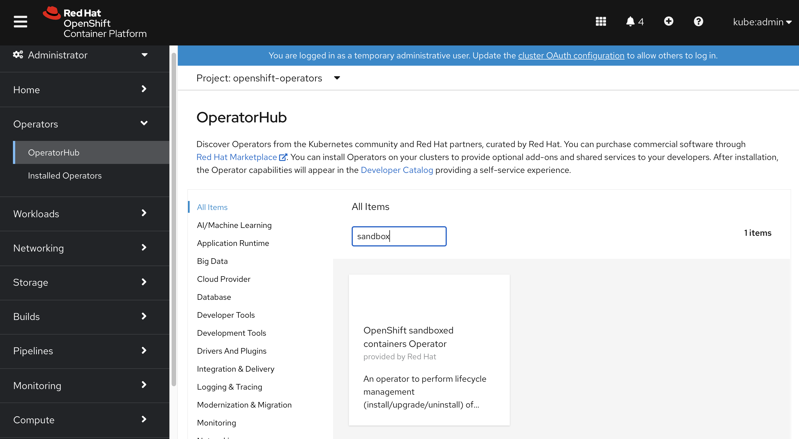
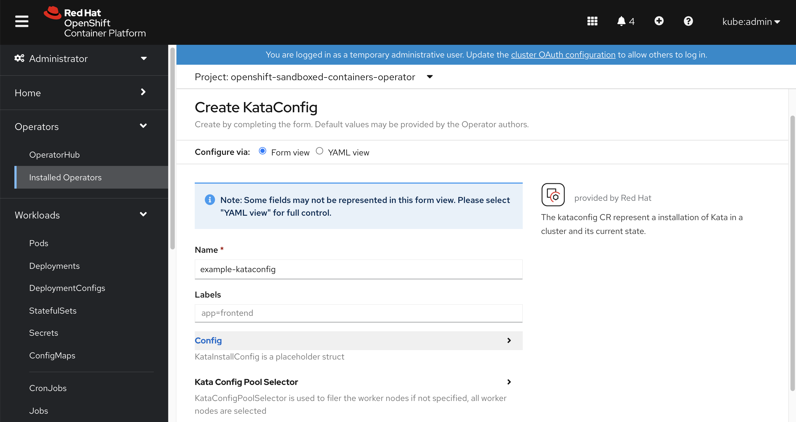
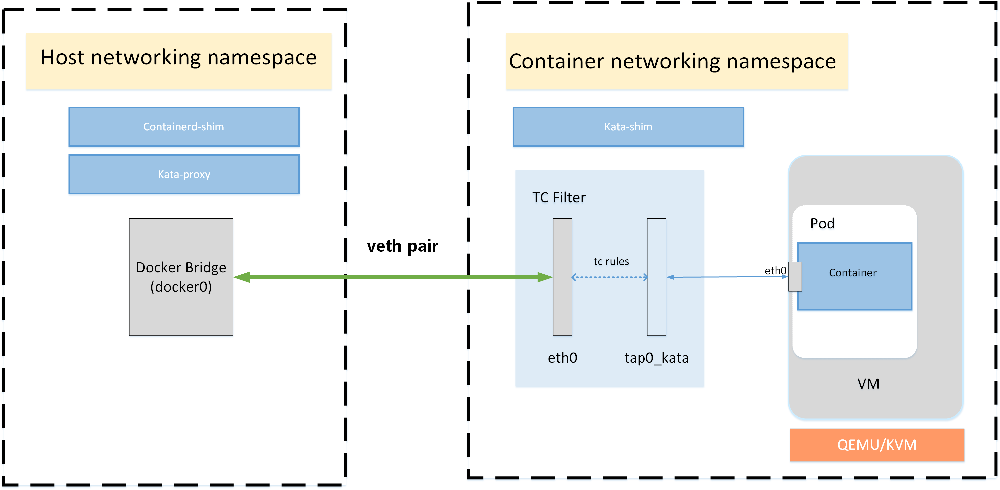

Kata / sandbox container in openshift 4.8
红帽 openshift 4.8 容器平台，最新支持了kata，或者叫沙盒容器, 是在物理机上启动vm，然后在vm里面启动容器进程的技术，初衷是为了进一步提高安全性，消除用户对容器是否存在逃逸问题的顾虑，虽然还是TP阶段，但是已经可以一探究竟啦。
https://docs.openshift.com/container-platform/4.8/sandboxed_containers/understanding-sandboxed-containers.html
视频讲解:
首先我们来安装它，在operator hub里面选择sandbox container，点击安装。

然后在operator里面创建一个kata config，默认就可以，现在是TP阶段，也没什么花活。

创建好了以后，kata operator就会在系统里面创建一些配置，我们来一个一个看一下。
# 首先是runtime class，这个是指出了pod可以使用kata作为runtime,
# 注意礼貌的overhead，这个配置的意思，是kata有qemu作为虚拟机，所以会有一些额外的消耗，
# 这些消耗在scheduling的时候，需要计算，这里就把这个计算量静态的配置进去。。。
# 虽然我觉得这个不太灵活，但是目前就是这样的。
oc get runtimeclass/kata -o yaml
# apiVersion: node.k8s.io/v1
# handler: kata
# kind: RuntimeClass
# metadata:
# name: kata
# overhead:
# podFixed:
# cpu: 250m
# memory: 350Mi
# scheduling:
# nodeSelector:
# node-role.kubernetes.io/worker: ""
# ocp会把kata通过machine config的方式，配置到节点里面去
oc get mc
# NAME GENERATEDBYCONTROLLER IGNITIONVERSION AGE
# 00-master 723a8a4992f42530af95202e51e5a940d2a3d169 3.2.0 15h
# 00-worker 723a8a4992f42530af95202e51e5a940d2a3d169 3.2.0 15h
# 01-master-container-runtime 723a8a4992f42530af95202e51e5a940d2a3d169 3.2.0 15h
# 01-master-kubelet 723a8a4992f42530af95202e51e5a940d2a3d169 3.2.0 15h
# 01-worker-container-runtime 723a8a4992f42530af95202e51e5a940d2a3d169 3.2.0 15h
# 01-worker-kubelet 723a8a4992f42530af95202e51e5a940d2a3d169 3.2.0 15h
# 50-enable-sandboxed-containers-extension 3.2.0 51m
# 99-master-chrony-configuration 2.2.0 15h
# 99-master-container-registries 3.1.0 15h
# 99-master-generated-registries 723a8a4992f42530af95202e51e5a940d2a3d169 3.2.0 15h
# 99-master-ssh 3.2.0 15h
# 99-worker-chrony-configuration 2.2.0 15h
# 99-worker-container-registries 3.1.0 15h
# 99-worker-generated-registries 723a8a4992f42530af95202e51e5a940d2a3d169 3.2.0 15h
# 99-worker-ssh 3.2.0 15h
# rendered-master-8c1e34a69aa4b919b6f2eec350570491 723a8a4992f42530af95202e51e5a940d2a3d169 3.2.0 15h
# rendered-worker-4afd90ddf39588aae385def4519e8da9 723a8a4992f42530af95202e51e5a940d2a3d169 3.2.0 51m
# rendered-worker-5abff4814eef2f9bc7535e5cbb10564c 723a8a4992f42530af95202e51e5a940d2a3d169 3.2.0 15h
# 那这个machine config里面是什么呢？我们看一看
# 原来是加了一个extension,
# 经过查看源代码，这个sandboxed-containers extension就是对应了kata-containers rpm
oc get mc/50-enable-sandboxed-containers-extension -o yaml
# apiVersion: machineconfiguration.openshift.io/v1
# kind: MachineConfig
# metadata:
# labels:
# app: example-kataconfig
# machineconfiguration.openshift.io/role: worker
# name: 50-enable-sandboxed-containers-extension
# spec:
# config:
# ignition:
# version: 3.2.0
# extensions:
# - sandboxed-containers
# 我们到worker-0上看看，发现确实是安装了一个新的kata-containers rpm
rpm-ostree status
# State: idle
# Deployments:
# ● pivot://quay.io/openshift-release-dev/ocp-v4.0-art-dev@sha256:6ddc94ab09a4807ea3d1f29a922fe15f0b4ee863529258c486a04e7fb7b95a4b
# CustomOrigin: Managed by machine-config-operator
# Version: 48.84.202108161759-0 (2021-08-16T18:03:02Z)
# LayeredPackages: kata-containers
# pivot://quay.io/openshift-release-dev/ocp-v4.0-art-dev@sha256:6ddc94ab09a4807ea3d1f29a922fe15f0b4ee863529258c486a04e7fb7b95a4b
# CustomOrigin: Managed by machine-config-operator
# Version: 48.84.202108161759-0 (2021-08-16T18:03:02Z)
# 我们看看这个kata-containers rpm里面都提供了什么文件
rpm -ql kata-containers
# /etc/crio/crio.conf.d/50-kata
# /usr/bin/containerd-shim-kata-v2
# /usr/bin/kata-collect-data.sh
# /usr/bin/kata-monitor
# /usr/bin/kata-runtime
# /usr/lib/.build-id
# /usr/lib/.build-id/0f
# /usr/lib/.build-id/0f/dc6751937c4b54a2e10ed431f7969bfd85d2d7
# /usr/lib/.build-id/5e
# /usr/lib/.build-id/5e/ad1e1eca5ab8111a23bf094caf6acbd3b9d7af
# /usr/lib/.build-id/67
# /usr/lib/.build-id/67/e5107c68c0e147f24f6e8f4e96104564b8f223
# /usr/lib/.build-id/be
# /usr/lib/.build-id/be/0add7df48b5f06a305e95497355666a1e04e39
# /usr/lib/systemd/system/kata-osbuilder-generate.service
# /usr/libexec/kata-containers
# /usr/libexec/kata-containers/VERSION
# /usr/libexec/kata-containers/agent
# /usr/libexec/kata-containers/agent/usr
# /usr/libexec/kata-containers/agent/usr/bin
# /usr/libexec/kata-containers/agent/usr/bin/kata-agent
# /usr/libexec/kata-containers/agent/usr/lib
# /usr/libexec/kata-containers/agent/usr/lib/systemd
# /usr/libexec/kata-containers/agent/usr/lib/systemd/system
# /usr/libexec/kata-containers/agent/usr/lib/systemd/system/kata-agent.service
# /usr/libexec/kata-containers/agent/usr/lib/systemd/system/kata-containers.target
# /usr/libexec/kata-containers/kata-netmon
# /usr/libexec/kata-containers/osbuilder
# /usr/libexec/kata-containers/osbuilder/dracut
# /usr/libexec/kata-containers/osbuilder/dracut/dracut.conf.d
# /usr/libexec/kata-containers/osbuilder/dracut/dracut.conf.d/05-base.conf
# /usr/libexec/kata-containers/osbuilder/dracut/dracut.conf.d/15-dracut-rhel.conf
# /usr/libexec/kata-containers/osbuilder/initrd-builder
# /usr/libexec/kata-containers/osbuilder/initrd-builder/README.md
# /usr/libexec/kata-containers/osbuilder/initrd-builder/initrd_builder.sh
# /usr/libexec/kata-containers/osbuilder/kata-osbuilder.sh
# /usr/libexec/kata-containers/osbuilder/nsdax
# /usr/libexec/kata-containers/osbuilder/rootfs-builder
# /usr/libexec/kata-containers/osbuilder/rootfs-builder/README.md
# /usr/libexec/kata-containers/osbuilder/rootfs-builder/rootfs.sh
# /usr/libexec/kata-containers/osbuilder/scripts
# /usr/libexec/kata-containers/osbuilder/scripts/lib.sh
# /usr/share/bash-completion/completions/kata-runtime
# /usr/share/doc/kata-containers
# /usr/share/doc/kata-containers/CONTRIBUTING.md
# /usr/share/doc/kata-containers/README.md
# /usr/share/kata-containers
# /usr/share/kata-containers/defaults
# /usr/share/kata-containers/defaults/configuration.toml
# /usr/share/licenses/kata-containers
# /usr/share/licenses/kata-containers/LICENSE
# /var/cache/kata-containers
# 我们看看kata-containers 使用的虚拟机镜像
ls -Rl /var/cache/kata-containers
# /var/cache/kata-containers:
# total 0
# lrwxrwxrwx. 1 root root 121 Aug 26 05:22 kata-containers-initrd.img -> '/var/cache/kata-containers/osbuilder-images/4.18.0-305.12.1.el8_4.x86_64/"rhcos"-kata-4.18.0-305.12.1.el8_4.x86_64.initrd'
# drwxr-xr-x. 3 root root 42 Aug 26 05:22 osbuilder-images
# lrwxrwxrwx. 1 root root 50 Aug 26 05:22 vmlinuz.container -> /lib/modules/4.18.0-305.12.1.el8_4.x86_64//vmlinuz
# /var/cache/kata-containers/osbuilder-images:
# total 0
# drwxr-xr-x. 2 root root 62 Aug 26 05:22 4.18.0-305.12.1.el8_4.x86_64
# /var/cache/kata-containers/osbuilder-images/4.18.0-305.12.1.el8_4.x86_64:
# total 19224
# -rw-r--r--. 1 root root 19682871 Aug 26 05:22 '"rhcos"-kata-4.18.0-305.12.1.el8_4.x86_64.initrd'
# 我们看看kata和crio的结合点，就是crios的配置文件里面
cat /etc/crio/crio.conf.d/50-kata
# [crio.runtime.runtimes.kata]
# runtime_path = "/usr/bin/containerd-shim-kata-v2"
# runtime_type = "vm"
# runtime_root = "/run/vc"
# privileged_without_host_devices = true
# 我们能看到，系统启动的时候，会根据当前操作系统，编译一个kata使用的虚拟机镜像。
# 后面如果项目上有需要，可以在这个步骤上，做定制，做一个客户需要的虚拟机镜像。
systemctl cat kata-osbuilder-generate.service
# # /usr/lib/systemd/system/kata-osbuilder-generate.service
# [Unit]
# Description=Generate Kata appliance image for host kernel
# [Service]
# Type=oneshot
# ExecStart=/usr/libexec/kata-containers/osbuilder/kata-osbuilder.sh -c
# ExecReload=/usr/libexec/kata-containers/osbuilder/kata-osbuilder.sh
# [Install]
# WantedBy=kubelet.service
# 我们来搞一个pod，测试一下。
cat << EOF > /data/install/kata.yaml
apiVersion: apps/v1
kind: Deployment
metadata:
name: mypod
labels:
app: mypod
spec:
replicas: 1
selector:
matchLabels:
app: mypod
template:
metadata:
labels:
app: mypod
spec:
runtimeClassName: kata
containers:
- name: mypod
image: quay.io/wangzheng422/qimgs:centos7-test
command:
- sleep
- infinity
EOF
oc create -f /data/install/kata.yaml
# to restore
oc delete -f /data/install/kata.yaml
# 到worker-0上，可以看到qemu进程。
ps aufx ww | grep qemu
# root 99994 0.0 0.0 12816 1076 pts/0 S+ 06:22 0:00 \_ grep --color=auto qemu
# root 93561 1.3 0.9 2466300 326724 ? Sl 06:19 0:03 /usr/libexec/qemu-kiwi -name sandbox-42f003b365352a71ab87e8a1f49b1c301b6c3c856ec5520b4986aa8b9e43151f -uuid 1cd86e5c-3f86-45e8-bce2-96b16dce635a -machine q35,accel=kvm,kernel_irqchip -cpu host,pmu=off -qmp unix:/run/vc/vm/42f003b365352a71ab87e8a1f49b1c301b6c3c856ec5520b4986aa8b9e43151f/qmp.sock,server=on,wait=off -m 2048M,slots=10,maxmem=33122M -device pci-bridge,bus=pcie.0,id=pci-bridge-0,chassis_nr=1,shpc=on,addr=2 -device virtio-serial-pci,disable-modern=false,id=serial0 -device virtconsole,chardev=charconsole0,id=console0 -chardev socket,id=charconsole0,path=/run/vc/vm/42f003b365352a71ab87e8a1f49b1c301b6c3c856ec5520b4986aa8b9e43151f/console.sock,server=on,wait=off -device virtio-scsi-pci,id=scsi0,disable-modern=false -object rng-random,id=rng0,filename=/dev/urandom -device virtio-rng-pci,rng=rng0 -device vhost-vsock-pci,disable-modern=false,vhostfd=3,id=vsock-976011602,guest-cid=976011602 -chardev socket,id=char-b4b86634faff36bb,path=/run/vc/vm/42f003b365352a71ab87e8a1f49b1c301b6c3c856ec5520b4986aa8b9e43151f/vhost-fs.sock -device vhost-user-fs-pci,chardev=char-b4b86634faff36bb,tag=kataShared -netdev tap,id=network-0,vhost=on,vhostfds=4,fds=5 -device driver=virtio-net-pci,netdev=network-0,mac=0a:58:0a:fe:01:1a,disable-modern=false,mq=on,vectors=4 -rtc base=utc,driftfix=slew,clock=host -global kvm-pit.lost_tick_policy=discard -vga none -no-user-config -nodefaults -nographic --no-reboot -daemonize -object memory-backend-file,id=dimm1,size=2048M,mem-path=/dev/shm,share=on -numa node,memdev=dimm1 -kernel /usr/lib/modules/4.18.0-305.12.1.el8_4.x86_64/vmlinuz -initrd /var/cache/kata-containers/osbuilder-images/4.18.0-305.12.1.el8_4.x86_64/"rhcos"-kata-4.18.0-305.12.1.el8_4.x86_64.initrd -append tsc=reliable no_timer_check rcupdate.rcu_expedited=1 i8042.direct=1 i8042.dumbkbd=1 i8042.nopnp=1 i8042.noaux=1 noreplace-smp reboot=k console=hvc0 console=hvc1 cryptomgr.notests net.ifnames=0 pci=lastbus=0 quiet panic=1 nr_cpus=24 scsi_mod.scan=none -pidfile /run/vc/vm/42f003b365352a71ab87e8a1f49b1c301b6c3c856ec5520b4986aa8b9e43151f/pid -smp 1,cores=1,threads=1,sockets=24,maxcpus=24
# 我们很好奇kata的详细配置，那么我们看看kata的配置文件在哪里
kata-runtime --show-default-config-paths
# /etc/kata-containers/configuration.toml
# /usr/share/kata-containers/defaults/configuration.toml
# 我们看看kata的配置文件内容
cat /usr/share/kata-containers/defaults/configuration.toml# 我们看看kata runtime感知到的配置内容
kata-runtime env
# [Meta]
# Version = "1.0.25"
# [Runtime]
# Debug = false
# Trace = false
# DisableGuestSeccomp = true
# DisableNewNetNs = false
# SandboxCgroupOnly = true
# Path = "/usr/bin/kata-runtime"
# [Runtime.Version]
# OCI = "1.0.1-dev"
# [Runtime.Version.Version]
# Semver = "2.1.0"
# Major = 2
# Minor = 1
# Patch = 0
# Commit = "fa7b9408555e863d0f36f7d0640134069b0c70c8"
# [Runtime.Config]
# Path = "/usr/share/kata-containers/defaults/configuration.toml"
# [Hypervisor]
# MachineType = "q35"
# Version = "QEMU emulator version 5.2.0 (qemu-kvm-5.2.0-16.module+el8.4.0+11536+725e25d9.2)\nCopyright (c) 2003-2020 Fabrice Bellard and the QEMU Project developers"
# Path = "/usr/libexec/qemu-kiwi"
# BlockDeviceDriver = "virtio-scsi"
# EntropySource = "/dev/urandom"
# SharedFS = "virtio-fs"
# VirtioFSDaemon = "/usr/libexec/virtiofsd"
# Msize9p = 8192
# MemorySlots = 10
# PCIeRootPort = 0
# HotplugVFIOOnRootBus = false
# Debug = false
# [Image]
# Path = ""
# [Kernel]
# Path = "/usr/lib/modules/4.18.0-305.12.1.el8_4.x86_64/vmlinuz"
# Parameters = "scsi_mod.scan=none"
# [Initrd]
# Path = "/var/cache/kata-containers/osbuilder-images/4.18.0-305.12.1.el8_4.x86_64/\"rhcos\"-kata-4.18.0-305.12.1.el8_4.x86_64.initrd"
# [Agent]
# Debug = false
# Trace = false
# TraceMode = ""
# TraceType = ""
# [Host]
# Kernel = "4.18.0-305.12.1.el8_4.x86_64"
# Architecture = "amd64"
# VMContainerCapable = true
# SupportVSocks = true
# [Host.Distro]
# Name = "Red Hat Enterprise Linux CoreOS"
# Version = "4.8"
# [Host.CPU]
# Vendor = "GenuineIntel"
# Model = "Intel(R) Xeon(R) CPU E5-2620 v2 @ 2.10GHz"
# CPUs = 24
# [Host.Memory]
# Total = 32868716
# Free = 27704960
# Available = 29880404
# [Netmon]
# Path = "/usr/libexec/kata-containers/kata-netmon"
# Debug = false
# Enable = false
# [Netmon.Version]
# Semver = "2.1.0"
# Major = 2
# Minor = 1
# Patch = 0
# Commit = "<<unknown>>"
# 我们看看这个构建kata虚拟机镜像的脚本
cat /usr/libexec/kata-containers/osbuilder/kata-osbuilder.shtry to debug
# try to debug
# 为了能进入到kata虚拟机内部，我们需要修改一下kata的配置文件，激活debug console
mkdir -p /etc/kata-containers/
install -o root -g root -m 0640 /usr/share/kata-containers/defaults/configuration.toml /etc/kata-containers
sed -i -e 's/^# *\(debug_console_enabled\).*=.*$/\1 = true/g' /etc/kata-containers/configuration.toml
# 然后重启pod，我们就能直接连进去kata虚拟机了。
# ps -ef | grep qemu-kiwi | sed 's/.* sandbox-\([^ ]*\) .*/\1/p' | grep -v qemu-kiwi
KATA_PID=`ps -ef | grep qemu-kiwi | sed 's/.* sandbox-\([^ ]*\) .*/\1/g' | grep -v qemu-kiwi`
kata-runtime exec $KATA_PIDin the kata vm
# 虚拟机里面，是个超级简化的系统，命令奇缺
bash-4.4# cd /etc
# ls都没有，只能echo * 代替。
bash-4.4# echo *
chrony.conf cmdline.d conf.d group ld.so.cache ld.so.conf ld.so.conf.d machine-id modules-load.d passwd resolv.conf systemd udev virc
# 可以看到，操作系统和宿主机一样，因为启动的时候，用宿主机的内核构建出来的
bash-4.4# uname -a
Linux mypod-787d79b456-4f4xr 4.18.0-305.12.1.el8_4.x86_64 #1 SMP Mon Jul 26 08:06:24 EDT 2021 x86_64 x86_64 x86_64 GNU/Linux
# 看看激活了什么内核模块
bash-4.4# lsmod
Module Size Used by
mcryptd 16384 0
virtio_blk 20480 0
virtio_console 36864 0
virtio_net 53248 0
net_failover 24576 1 virtio_net
sg 40960 0
virtio_scsi 20480 0
virtiofs 28672 1
failover 16384 1 net_failover
vmw_vsock_virtio_transport 16384 2
vmw_vsock_virtio_transport_common 32768 1 vmw_vsock_virtio_transport
vsock 45056 10 vmw_vsock_virtio_transport_common,vmw_vsock_virtio_transport
fuse 151552 1 virtiofs
# 看看挂载了什么分区
bash-4.4# mount
rootfs on / type rootfs (rw,size=964048k,nr_inodes=241012)
sysfs on /sys type sysfs (rw,nosuid,nodev,noexec,relatime)
proc on /proc type proc (rw,nosuid,nodev,noexec,relatime)
devtmpfs on /dev type devtmpfs (rw,nosuid,size=964064k,nr_inodes=241016,mode=755)
securityfs on /sys/kernel/security type securityfs (rw,nosuid,nodev,noexec,relatime)
selinuxfs on /sys/fs/selinux type selinuxfs (rw,relatime)
tmpfs on /dev/shm type tmpfs (rw,nosuid,nodev)
devpts on /dev/pts type devpts (rw,nosuid,noexec,relatime,gid=5,mode=620,ptmxmode=000)
tmpfs on /run type tmpfs (rw,nosuid,nodev,mode=755)
tmpfs on /sys/fs/cgroup type tmpfs (ro,nosuid,nodev,noexec,mode=755)
cgroup on /sys/fs/cgroup/systemd type cgroup (rw,nosuid,nodev,noexec,relatime,xattr,release_agent=/usr/lib/systemd/systemd-cgroups-agent,name=systemd)
pstore on /sys/fs/pstore type pstore (rw,nosuid,nodev,noexec,relatime)
bpf on /sys/fs/bpf type bpf (rw,nosuid,nodev,noexec,relatime,mode=700)
cgroup on /sys/fs/cgroup/freezer type cgroup (rw,nosuid,nodev,noexec,relatime,freezer)
cgroup on /sys/fs/cgroup/cpu,cpuacct type cgroup (rw,nosuid,nodev,noexec,relatime,cpu,cpuacct)
cgroup on /sys/fs/cgroup/net_cls,net_prio type cgroup (rw,nosuid,nodev,noexec,relatime,net_cls,net_prio)
cgroup on /sys/fs/cgroup/blkio type cgroup (rw,nosuid,nodev,noexec,relatime,blkio)
cgroup on /sys/fs/cgroup/memory type cgroup (rw,nosuid,nodev,noexec,relatime,memory)
cgroup on /sys/fs/cgroup/devices type cgroup (rw,nosuid,nodev,noexec,relatime,devices)
cgroup on /sys/fs/cgroup/perf_event type cgroup (rw,nosuid,nodev,noexec,relatime,perf_event)
cgroup on /sys/fs/cgroup/cpuset type cgroup (rw,nosuid,nodev,noexec,relatime,cpuset)
cgroup on /sys/fs/cgroup/pids type cgroup (rw,nosuid,nodev,noexec,relatime,pids)
cgroup on /sys/fs/cgroup/hugetlb type cgroup (rw,nosuid,nodev,noexec,relatime,hugetlb)
cgroup on /sys/fs/cgroup/rdma type cgroup (rw,nosuid,nodev,noexec,relatime,rdma)
tmpfs on /tmp type tmpfs (rw,nosuid,nodev)
configfs on /sys/kernel/config type configfs (rw,relatime)
nsfs on /run/sandbox-ns/ipc type nsfs (rw)
nsfs on /run/sandbox-ns/uts type nsfs (rw)
kataShared on /run/kata-containers/shared/containers type virtiofs (rw,relatime)
shm on /run/kata-containers/sandbox/shm type tmpfs (rw,relatime)
tmpfs on /etc/resolv.conf type tmpfs (rw,nosuid,nodev,mode=755)
kataShared on /run/kata-containers/8330bf4c2a98360975ce16244af81c4a5dfa74d4ea3c8a520d9244f0c14e541b/rootfs type virtiofs (rw,relatime)
kataShared on /run/kata-containers/bc201bf92ec8dcad3435ff4191912a41efb64a1e0fb463ad4a651b4dea94a8a5/rootfs type virtiofs (rw,relatime)
b
# 看看都有什么进程
bash-4.4# ps efx ww
PID TTY STAT TIME COMMAND
2 ? S 0:00 [kthreadd]
3 ? I< 0:00 \_ [rcu_gp]
4 ? I< 0:00 \_ [rcu_par_gp]
6 ? I< 0:00 \_ [kworker/0:0H-events_highpri]
7 ? I 0:00 \_ [kworker/0:1-virtio_vsock]
8 ? I 0:00 \_ [kworker/u48:0-events_unbound]
9 ? I< 0:00 \_ [mm_percpu_wq]
10 ? S 0:00 \_ [ksoftirqd/0]
11 ? I 0:00 \_ [rcu_sched]
12 ? S 0:00 \_ [migration/0]
13 ? S 0:00 \_ [watchdog/0]
14 ? S 0:00 \_ [cpuhp/0]
16 ? S 0:00 \_ [kdevtmpfs]
17 ? I< 0:00 \_ [netns]
18 ? S 0:00 \_ [kauditd]
19 ? S 0:00 \_ [khungtaskd]
20 ? S 0:00 \_ [oom_reaper]
21 ? I< 0:00 \_ [writeback]
22 ? S 0:00 \_ [kcompactd0]
23 ? SN 0:00 \_ [ksmd]
24 ? SN 0:00 \_ [khugepaged]
25 ? I< 0:00 \_ [crypto]
26 ? I< 0:00 \_ [kintegrityd]
27 ? I< 0:00 \_ [kblockd]
28 ? I< 0:00 \_ [blkcg_punt_bio]
29 ? I< 0:00 \_ [tpm_dev_wq]
30 ? I< 0:00 \_ [md]
31 ? I< 0:00 \_ [edac-poller]
32 ? S 0:00 \_ [watchdogd]
33 ? I< 0:00 \_ [kworker/0:1H]
35 ? I 0:00 \_ [kworker/u48:1]
49 ? S 0:00 \_ [kswapd0]
132 ? I< 0:00 \_ [kthrotld]
133 ? I< 0:00 \_ [acpi_thermal_pm]
134 ? S 0:00 \_ [hwrng]
135 ? I< 0:00 \_ [kmpath_rdacd]
136 ? I< 0:00 \_ [kaluad]
137 ? I< 0:00 \_ [ipv6_addrconf]
138 ? I< 0:00 \_ [kstrp]
203 ? I 0:00 \_ [kworker/0:3-mm_percpu_wq]
206 ? S 0:00 \_ [scsi_eh_0]
207 ? I< 0:00 \_ [scsi_tmf_0]
218 ? S 0:00 \_ [khvcd]
1 ? Ss 0:00 /init HOME=/ TERM=linux
193 ? Ss 0:00 /usr/lib/systemd/systemd-journald PATH=/usr/local/sbin:/usr/local/bin:/usr/sbin:/usr/bin NOTIFY_SOCKET=/run/systemd/notify LISTEN_PID=193 LISTEN_FDS=3 LISTEN_FDNAMES=systemd-journald-dev-log.socket:systemd-journald.socket:systemd-journald.socket WATCHDOG_PID=193 WATCHDOG_USEC=180000000 INVOCATION_ID=00385279d7314bf5a02002d5f1e33050
201 ? Ss 0:00 /usr/lib/systemd/systemd-udevd PATH=/usr/local/sbin:/usr/local/bin:/usr/sbin:/usr/bin NOTIFY_SOCKET=/run/systemd/notify LISTEN_PID=201 LISTEN_FDS=2 LISTEN_FDNAMES=systemd-udevd-kernel.socket:systemd-udevd-control.socket WATCHDOG_PID=201 WATCHDOG_USEC=180000000 INVOCATION_ID=b3e4a3cd29b34c91a192bc9527da10cf JOURNAL_STREAM=9:10719
225 ? Ssl 0:02 /usr/bin/kata-agent PATH=/usr/local/sbin:/usr/local/bin:/usr/sbin:/usr/bin INVOCATION_ID=5683abfd11c542fe98c5f7ece1afa599 TERM=vt220
231 ? S 0:00 \_ /usr/bin/pod PATH=/usr/local/sbin:/usr/local/bin:/usr/sbin:/usr/bin:/sbin:/bin TERM=xterm HOME=/root
235 ? S 0:00 \_ sleep infinity PATH=/usr/local/sbin:/usr/local/bin:/usr/sbin:/usr/bin:/sbin:/bin TERM=xterm HOSTNAME=mypod-787d79b456-4f4xr NSS_SDB_USE_CACHE=no KUBERNETES_SERVICE_HOST=172.30.0.1 KUBERNETES_SERVICE_PORT=443 KUBERNETES_SERVICE_PORT_HTTPS=443 KUBERNETES_PORT=tcp://172.30.0.1:443 KUBERNETES_PORT_443_TCP=tcp://172.30.0.1:443 KUBERNETES_PORT_443_TCP_PROTO=tcp KUBERNETES_PORT_443_TCP_PORT=443 KUBERNETES_PORT_443_TCP_ADDR=172.30.0.1 HOME=/root
236 pts/0 Ss 0:00 \_ [bash] PATH=/usr/local/sbin:/usr/local/bin:/usr/sbin:/usr/bin INVOCATION_ID=5683abfd11c542fe98c5f7ece1afa599 TERM=vt220 RUST_BACKTRACE=full
268 pts/0 R+ 0:00 | \_ ps efx ww RUST_BACKTRACE=full INVOCATION_ID=5683abfd11c542fe98c5f7ece1afa599 PWD=/proc/net TERM=vt220 SHLVL=1 PATH=/usr/local/sbin:/usr/local/bin:/usr/sbin:/usr/bin OLDPWD=/proc _=/usr/bin/ps
247 pts/1 Ss+ 0:00 \_ /bin/sh TERM=screen-256color HOSTNAME=mypod-787d79b456-4f4xr KUBERNETES_PORT_443_TCP_PORT=443 KUBERNETES_PORT=tcp://172.30.0.1:443 KUBERNETES_SERVICE_PORT=443 KUBERNETES_SERVICE_HOST=172.30.0.1 PATH=/usr/local/sbin:/usr/local/bin:/usr/sbin:/usr/bin:/sbin:/bin PWD=/ SHLVL=1 HOME=/root KUBERNETES_PORT_443_TCP_PROTO=tcp KUBERNETES_SERVICE_PORT_HTTPS=443 NSS_SDB_USE_CACHE=no KUBERNETES_PORT_443_TCP_ADDR=172.30.0.1 KUBERNETES_PORT_443_TCP=tcp://172.30.0.1:443 _=/bin/sh
# 看看有多少内存
bash-4.4# free -h
total used free shared buff/cache available
Mem: 1.9Gi 30Mi 1.8Gi 58Mi 72Mi 1.7Gi
Swap: 0B 0B 0B
# 看看内核启动参数
bash-4.4# cat cmdline
tsc=reliable no_timer_check rcupdate.rcu_expedited=1 i8042.direct=1 i8042.dumbkbd=1 i8042.nopnp=1 i8042.noaux=1 noreplace-smp reboot=k console=hvc0 console=hvc1 cryptomgr.notests net.ifnames=0 pci=lastbus=0 quiet panic=1 nr_cpus=24 scsi_mod.scan=none agent.debug_console agent.debug_console_vport=1026
# 没有ip命令，只能用内核接口，凑合看一下本机ip 地址
bash-4.4# cat /proc/net/fib_trie
Main:
+-- 0.0.0.0/0 3 0 4
+-- 0.0.0.0/4 2 0 2
|-- 0.0.0.0
/0 universe UNICAST
+-- 10.254.0.0/23 2 0 1
|-- 10.254.0.0
/16 universe UNICAST
+-- 10.254.1.0/28 2 0 2
|-- 10.254.1.0
/32 link BROADCAST
/24 link UNICAST
|-- 10.254.1.14
/32 host LOCAL
|-- 10.254.1.255
/32 link BROADCAST
+-- 127.0.0.0/8 2 0 2
+-- 127.0.0.0/31 1 0 0
|-- 127.0.0.0
/32 link BROADCAST
/8 host LOCAL
|-- 127.0.0.1
/32 host LOCAL
|-- 127.255.255.255
/32 link BROADCAST
|-- 172.30.0.0
/16 universe UNICAST
|-- 224.0.0.0
/4 universe UNICAST
Local:
+-- 0.0.0.0/0 3 0 4
+-- 0.0.0.0/4 2 0 2
|-- 0.0.0.0
/0 universe UNICAST
+-- 10.254.0.0/23 2 0 1
|-- 10.254.0.0
/16 universe UNICAST
+-- 10.254.1.0/28 2 0 2
|-- 10.254.1.0
/32 link BROADCAST
/24 link UNICAST
|-- 10.254.1.14
/32 host LOCAL
|-- 10.254.1.255
/32 link BROADCAST
+-- 127.0.0.0/8 2 0 2
+-- 127.0.0.0/31 1 0 0
|-- 127.0.0.0
/32 link BROADCAST
/8 host LOCAL
|-- 127.0.0.1
/32 host LOCAL
|-- 127.255.255.255
/32 link BROADCAST
|-- 172.30.0.0
/16 universe UNICAST
|-- 224.0.0.0
/4 universe UNICAST
# 看看systemctl的服务
bash-4.4# systemctl list-units
UNIT LOAD ACTIVE SUB DESCRIPTION
sys-devices-pci0000:00-0000:00:01.0-virtio0-virtio\x2dports-vport0p0.device loaded active plugged /sys/devices/pci0000:00/0000:00:01.0/virtio0/virtio-ports/vport0p0
sys-devices-pci0000:00-0000:00:07.0-virtio5-net-eth0.device loaded active plugged /sys/devices/pci0000:00/0000:00:07.0/virtio5/net/eth0
sys-devices-platform-serial8250-tty-ttyS0.device loaded active plugged /sys/devices/platform/serial8250/tty/ttyS0
sys-devices-platform-serial8250-tty-ttyS1.device loaded active plugged /sys/devices/platform/serial8250/tty/ttyS1
sys-devices-platform-serial8250-tty-ttyS2.device loaded active plugged /sys/devices/platform/serial8250/tty/ttyS2
sys-devices-platform-serial8250-tty-ttyS3.device loaded active plugged /sys/devices/platform/serial8250/tty/ttyS3
sys-devices-virtual-tty-hvc0.device loaded active plugged /sys/devices/virtual/tty/hvc0
sys-devices-virtual-tty-hvc1.device loaded active plugged /sys/devices/virtual/tty/hvc1
sys-devices-virtual-tty-hvc2.device loaded active plugged /sys/devices/virtual/tty/hvc2
sys-devices-virtual-tty-hvc3.device loaded active plugged /sys/devices/virtual/tty/hvc3
sys-devices-virtual-tty-hvc4.device loaded active plugged /sys/devices/virtual/tty/hvc4
sys-devices-virtual-tty-hvc5.device loaded active plugged /sys/devices/virtual/tty/hvc5
sys-devices-virtual-tty-hvc6.device loaded active plugged /sys/devices/virtual/tty/hvc6
sys-devices-virtual-tty-hvc7.device loaded active plugged /sys/devices/virtual/tty/hvc7
sys-module-configfs.device loaded active plugged /sys/module/configfs
sys-module-fuse.device loaded active plugged /sys/module/fuse
sys-subsystem-net-devices-eth0.device loaded active plugged /sys/subsystem/net/devices/eth0
-.mount loaded active mounted Root Mount
etc-resolv.conf.mount loaded active mounted /etc/resolv.conf
run-kata\x2dcontainers-3daea1739ff15b732a2a1e7cf76d64b49f128a5a55bb8807c5ddde96d378e5cd-rootfs.mount loaded active mounted /run/kata-containers/3daea1739ff15b732a2a1e7cf76d64b49f128a5a55bb8807c5ddde96d378e5cd/rootfs
run-kata\x2dcontainers-e47a609923ce835a252c87d71fc3ba92adb974f00fdae194576b3d388b1bc770-rootfs.mount loaded active mounted /run/kata-containers/e47a609923ce835a252c87d71fc3ba92adb974f00fdae194576b3d388b1bc770/rootfs
run-kata\x2dcontainers-sandbox-shm.mount loaded active mounted /run/kata-containers/sandbox/shm
-containers/shared/containersed-containers.mount loaded active mounted /run/kata--More--
run-sandbox\x2dns-ipc.mount loaded active mounted /run/sandbox-ns/ipc
run-sandbox\x2dns-uts.mount loaded active mounted /run/sandbox-ns/uts
sys-kernel-config.mount loaded active mounted Kernel Configuration File System
tmp.mount loaded active mounted Temporary Directory (/tmp)
systemd-ask-password-console.path loaded active waiting Dispatch Password Requests to Console Directory Watch
init.scope loaded active running System and Service Manager
kata-agent.service loaded active running Kata Containers Agent
kmod-static-nodes.service loaded active exited Create list of required static device nodes for the current kernel
systemd-journald.service loaded active running Journal Service
● systemd-modules-load.service loaded failed failed Load Kernel Modules
systemd-sysctl.service loaded active exited Apply Kernel Variables
systemd-tmpfiles-setup-dev.service loaded active exited Create Static Device Nodes in /dev
systemd-tmpfiles-setup.service loaded active exited Create Volatile Files and Directories
systemd-udev-trigger.service loaded active exited udev Coldplug all Devices
systemd-udevd.service loaded active running udev Kernel Device Manager
-.slice loaded active active Root Slice
system.slice loaded active active System Slice
systemd-journald-dev-log.socket loaded active running Journal Socket (/dev/log)
systemd-journald.socket loaded active running Journal Socket
systemd-udevd-control.socket loaded active running udev Control Socket
systemd-udevd-kernel.socket loaded active running udev Kernel Socket
basic.target loaded active active Basic System
kata-containers.target loaded active active Kata Containers Agent Target
local-fs.target loaded active active Local File Systems
multi-user.target loaded active active Multi-User System
paths.target loaded active active Paths
slices.target loaded active active Slices
sockets.target loaded active active Sockets
swap.target loaded active active Swap
sysinit.target loaded active active System Initialization
timers.target loaded active active Timers
# 有一个kata-containers的服务，我们很感兴趣，看看什么内容。
bash-4.4# systemctl cat kata-containers.target
# /usr/lib/systemd/system/kata-containers.target
#
# Copyright (c) 2018-2019 Intel Corporation
#
# SPDX-License-Identifier: Apache-2.0
#
[Unit]
Description=Kata Containers Agent Target
Requires=basic.target
Requires=tmp.mount
Wants=chronyd.service
Requires=kata-agent.service
Conflicts=rescue.service rescue.target
After=basic.target rescue.service rescue.target
AllowIsolate=yes
bash-4.4# systemctl cat kata-agent.service
# /usr/lib/systemd/system/kata-agent.service
#
# Copyright (c) 2018-2019 Intel Corporation
#
# SPDX-License-Identifier: Apache-2.0
#
[Unit]
Description=Kata Containers Agent
Documentation=https://github.com/kata-containers/kata-containers
Wants=kata-containers.target
[Service]
# Send agent output to tty to allow capture debug logs
# from a VM vsock port
StandardOutput=tty
Type=simple
ExecStart=/usr/bin/kata-agent
LimitNOFILE=1048576
# ExecStop is required for static agent tracing; in all other scenarios
# the runtime handles shutting down the VM.
ExecStop=/bin/sync ; /usr/bin/systemctl --force poweroff
FailureAction=poweroff
# Discourage OOM-killer from touching the agent
OOMScoreAdjust=-997
# 我们的容器都在哪里呢？找到了。
bash-4.4# pwd
/run/kata-containers/e47a609923ce835a252c87d71fc3ba92adb974f00fdae194576b3d388b1bc770/rootfs
bash-4.4# echo *
anaconda-post.log bin check.sh dev etc home lib lib64 media mnt opt proc root run sbin srv sys tmp usr var
从helper登录到容器里面，看看什么情况。
[root@helper ~]# oc rsh pod/mypod-787d79b456-4f4xr
sh-4.2# ls
anaconda-post.log bin dev etc home lib lib64 media mnt opt proc root run sbin srv sys tmp usr var
sh-4.2# ip a
1: lo: <LOOPBACK,UP,LOWER_UP> mtu 65536 qdisc noqueue state UNKNOWN group default qlen 1000
link/loopback 00:00:00:00:00:00 brd 00:00:00:00:00:00
inet 127.0.0.1/8 scope host lo
valid_lft forever preferred_lft forever
inet6 ::1/128 scope host
valid_lft forever preferred_lft forever
2: eth0: <BROADCAST,MULTICAST,UP,LOWER_UP> mtu 1450 qdisc fq_codel state UP group default qlen 1000
link/ether 0a:58:0a:fe:01:0e brd ff:ff:ff:ff:ff:ff
inet 10.254.1.14/24 brd 10.254.1.255 scope global eth0
valid_lft forever preferred_lft forever
inet6 fe80::858:aff:fefe:10e/64 scope link
valid_lft forever preferred_lft forever
inet6 fe80::5c25:c3ff:fe29:f429/64 scope link
valid_lft forever preferred_lft forever
sh-4.2# ps efx ww
PID TTY STAT TIME COMMAND
2 ? Ss 0:00 /bin/sh TERM=screen-256color HOSTNAME=mypod-787d79b456-4f4xr KUBERNETES_PORT_443_TCP_PORT=443 KUBERNETES_PORT=tcp://172.30.0.1:443 KUBERNETES_SERVICE_PORT=443 KUBERNETES_SERVICE_HOST=172.30.0.1 PATH=/usr/local/sbin:/usr/local/bin:/usr/sbin:/usr/bin:/sbin:/bin PWD=/ SHLVL=1 HOME=/root KUBERNETES_PORT_443_TCP_PROTO=tcp KUBERNETES_SERVICE_PORT_HTTPS=443 NSS_SDB_USE_CACHE=no KUBERNETES_PORT_443_TCP_ADDR=172.30.0.1 KUBERNETES_PORT_443_TCP=tcp://172.30.0.1:443 _=/bin/sh
9 ? R+ 0:00 \_ ps efx ww HOSTNAME=mypod-787d79b456-4f4xr KUBERNETES_PORT=tcp://172.30.0.1:443 KUBERNETES_PORT_443_TCP_PORT=443 TERM=screen-256color KUBERNETES_SERVICE_PORT=443 KUBERNETES_SERVICE_HOST=172.30.0.1 PATH=/usr/local/sbin:/usr/local/bin:/usr/sbin:/usr/bin:/sbin:/bin PWD=/ HOME=/root SHLVL=2 KUBERNETES_PORT_443_TCP_PROTO=tcp KUBERNETES_SERVICE_PORT_HTTPS=443 NSS_SDB_USE_CACHE=no KUBERNETES_PORT_443_TCP_ADDR=172.30.0.1 KUBERNETES_PORT_443_TCP=tcp://172.30.0.1:443 _=/usr/bin/ps
1 ? S 0:00 sleep infinity PATH=/usr/local/sbin:/usr/local/bin:/usr/sbin:/usr/bin:/sbin:/bin TERM=xterm HOSTNAME=mypod-787d79b456-4f4xr NSS_SDB_USE_CACHE=no KUBERNETES_SERVICE_HOST=172.30.0.1 KUBERNETES_SERVICE_PORT=443 KUBERNETES_SERVICE_PORT_HTTPS=443 KUBERNETES_PORT=tcp://172.30.0.1:443 KUBERNETES_PORT_443_TCP=tcp://172.30.0.1:443 KUBERNETES_PORT_443_TCP_PROTO=tcp KUBERNETES_PORT_443_TCP_PORT=443 KUBERNETES_PORT_443_TCP_ADDR=172.30.0.1 HOME=/root 研究一下网络
kata的网络模型，我们很关心，官方有文档。

# 我们在worker-0上，看看namespace情况
[root@worker-0 ~]# lsns --output NS,TYPE,NETNSID,PID,COMMAND | grep qemu
4026533791 net 5 20394 /usr/libexec/qemu-kiwi -name sandbox-0f60fb9af6dbf8c8e355b9e27a62debe8276aa76f4246857e46520fa677ce40e -uuid 0a101364-3814-42a4-91b9-c8a81fc377ef -machine q35,accel=kvm,kernel_irqchip -cpu host,pmu=off -qmp unix:/run/vc/vm/0f60fb9af6dbf8c8e355b9e27a62debe8276aa76f4246857e46520fa677ce40e/qmp.sock,server=on,wait=off -m 2048M,slots=10,maxmem=33122M -device pci-bridge,bus=pcie.0,id=pci-bridge-0,chassis_nr=1,shpc=on,addr=2 -device virtio-serial-pci,disable-modern=false,id=serial0 -device virtconsole,chardev=charconsole0,id=console0 -chardev socket,id=charconsole0,path=/run/vc/vm/0f60fb9af6dbf8c8e355b9e27a62debe8276aa76f4246857e46520fa677ce40e/console.sock,server=on,wait=off -device virtio-scsi-pci,id=scsi0,disable-modern=false -object rng-random,id=rng0,filename=/dev/urandom -device virtio-rng-pci,rng=rng0 -device vhost-vsock-pci,disable-modern=false,vhostfd=3,id=vsock-2809816003,guest-cid=2809816003 -chardev socket,id=char-3bb1f59f00a0b873,path=/run/vc/vm/0f60fb9af6dbf8c8e355b9e27a62debe8276aa76f4246857e46520fa677ce40e/vhost-fs.sock -device vhost-user-fs-pci,chardev=char-3bb1f59f00a0b873,tag=kataShared -netdev tap,id=network-0,vhost=on,vhostfds=4,fds=5 -device driver=virtio-net-pci,netdev=network-0,mac=0a:58:0a:81:00:12,disable-modern=false,mq=on,vectors=4 -rtc base=utc,driftfix=slew,clock=host -global kvm-pit.lost_tick_policy=discard -vga none -no-user-config -nodefaults -nographic --no-reboot -daemonize -object memory-backend-file,id=dimm1,size=2048M,mem-path=/dev/shm,share=on -numa node,memdev=dimm1 -kernel /usr/lib/modules/4.18.0-305.19.1.el8_4.x86_64/vmlinuz -initrd /var/cache/kata-containers/osbuilder-images/4.18.0-305.19.1.el8_4.x86_64/"rhcos"-kata-4.18.0-305.19.1.el8_4.x86_64.initrd -append tsc=reliable no_timer_check rcupdate.rcu_expedited=1 i8042.direct=1 i8042.dumbkbd=1 i8042.nopnp=1 i8042.noaux=1 noreplace-smp reboot=k console=hvc0 console=hvc1 cryptomgr.notests net.ifnames=0 pci=lastbus=0 quiet panic=1 nr_cpus=24 scsi_mod.scan=none agent.debug_console agent.debug_console_vport=1026 -pidfile /run/vc/vm/0f60fb9af6dbf8c8e355b9e27a62debe8276aa76f4246857e46520fa677ce40e/pid -smp 1,cores=1,threads=1,sockets=24,maxcpus=24
# 我们到kata的netns里面去看看忘了情况， eth0后面的@if22，说的是在对端，是22号接口和本接口做了peer。
[root@worker-0 ~]# nsenter -t 20394 -n ip a
1: lo: <LOOPBACK,UP,LOWER_UP> mtu 65536 qdisc noqueue state UNKNOWN group default qlen 1000
link/loopback 00:00:00:00:00:00 brd 00:00:00:00:00:00
inet 127.0.0.1/8 scope host lo
valid_lft forever preferred_lft forever
inet6 ::1/128 scope host
valid_lft forever preferred_lft forever
3: eth0@if22: <BROADCAST,MULTICAST,UP,LOWER_UP> mtu 1400 qdisc noqueue state UP group default qlen 1000
link/ether 0a:58:0a:81:00:12 brd ff:ff:ff:ff:ff:ff link-netns a4db0b05-2ff7-4a29-98da-1df2491622fb
inet 10.129.0.18/23 brd 10.129.1.255 scope global eth0
valid_lft forever preferred_lft forever
inet6 fe80::858:aff:fe81:12/64 scope link
valid_lft forever preferred_lft forever
4: tap0_kata: <BROADCAST,MULTICAST,UP,LOWER_UP> mtu 1400 qdisc mq state UNKNOWN group default qlen 1000
link/ether 56:51:b2:40:7c:56 brd ff:ff:ff:ff:ff:ff
inet6 fe80::5451:b2ff:fe40:7c56/64 scope link
valid_lft forever preferred_lft forever
# 我们在worker-0上，能看到有28号接口，并且对应这kata里面的3好接口
[root@worker-0 ~]# ip link | grep 22 -A3
link/ether 9e:88:4d:e5:55:80 brd ff:ff:ff:ff:ff:ff link-netns 7ccc8362-c042-4bf3-9ddc-fa4fef322134
18: 6f53bb03a970cf7@if3: <BROADCAST,MULTICAST,UP,LOWER_UP> mtu 1400 qdisc noqueue master ovs-system state UP mode DEFAULT group default
link/ether 8e:a7:85:94:de:7b brd ff:ff:ff:ff:ff:ff link-netns 5f33c5e4-1788-4ab6-883b-78bf7ab5372e
22: 0f60fb9af6dbf8c@if3: <BROADCAST,MULTICAST,UP,LOWER_UP> mtu 1400 qdisc noqueue master ovs-system state UP mode DEFAULT group default
link/ether 02:3c:63:91:ae:7f brd ff:ff:ff:ff:ff:ff link-netns 50226e1e-a0fd-48e3-b05c-7d5aa1d41acf
# 我们看看kata netns里面有没有nftables
[root@worker-0 ~]# nsenter -t 20394 -n nft list ruleset
table ip filter {
chain INPUT {
type filter hook input priority filter; policy accept;
}
chain FORWARD {
type filter hook forward priority filter; policy accept;
meta l4proto tcp tcp dport 22623 tcp flags & (fin|syn|rst|ack) == syn counter packets 0 bytes 0 reject
meta l4proto tcp tcp dport 22624 tcp flags & (fin|syn|rst|ack) == syn counter packets 0 bytes 0 reject
meta l4proto tcp ip daddr 169.254.169.254 tcp dport != 53 counter packets 0 bytes 0 reject
meta l4proto udp ip daddr 169.254.169.254 udp dport 53 counter packets 0 bytes 0 reject
}
chain OUTPUT {
type filter hook output priority filter; policy accept;
meta l4proto tcp tcp dport 22623 tcp flags & (fin|syn|rst|ack) == syn counter packets 0 bytes 0 reject
meta l4proto tcp tcp dport 22624 tcp flags & (fin|syn|rst|ack) == syn counter packets 0 bytes 0 reject
meta l4proto tcp ip daddr 169.254.169.254 tcp dport != 53 counter packets 0 bytes 0 reject
meta l4proto udp ip daddr 169.254.169.254 udp dport 53 counter packets 0 bytes 0 reject
}
}TC ( traffic control ) 的配置还是需要好好学习的，命令行比较复杂，可以参考以下的一些内容
可以使用的 man 命令
- man tc-mirred
- man tc-ctinfo
- man tc-u32
- man tc-actions
注意 action 里面有一个stolen，这个是说，命中以后，后续tc动作就中断了，进入netfilter等内核后续流程。
# 我们看看文档里面的tc配置，意思就是在eth0和tap0_kata之间mirror流量
# 根据网上的文档，tc qdisc add dev eth0 handle ffff: ingress is equivalent to tc qdisc add dev eth0 ingress, and also equals to 'qdisc ingress ffff: dev enp0s31f6 parent ffff:fff1 ----------------'
[root@worker-0 ~]# nsenter -t 20394 -n tc -s -p qdisc show dev eth0
qdisc noqueue 0: root refcnt 2
Sent 0 bytes 0 pkt (dropped 0, overlimits 0 requeues 0)
backlog 0b 0p requeues 0
qdisc ingress ffff: parent ffff:fff1 ----------------
Sent 192 bytes 2 pkt (dropped 0, overlimits 0 requeues 0)
backlog 0b 0p requeues 0
# 根据网上的文档，以下配置是 tc filter add dev eth0 parent ffff: protocol all u32 match u32 0 0 action mirred egress mirror dev tap0_kata 的结果
[root@worker-0 ~]# nsenter -t 20394 -n tc -s -p filter show dev eth0 root
filter parent ffff: protocol all pref 49152 u32 chain 0
filter parent ffff: protocol all pref 49152 u32 chain 0 fh 800: ht divisor 1
filter parent ffff: protocol all pref 49152 u32 chain 0 fh 800::800 order 2048 key ht 800 bkt 0 terminal flowid ??? not_in_hw (rule hit 2 success 2)
match 00000000/00000000 at 0 (success 2 )
action order 1: mirred (Egress Redirect to device tap0_kata) stolen
index 1 ref 1 bind 1 installed 2310 sec used 2310 sec firstused 2310 sec
Action statistics:
Sent 192 bytes 2 pkt (dropped 0, overlimits 0 requeues 0)
backlog 0b 0p requeues 0
[root@worker-0 ~]# nsenter -t 20394 -n tc -s -p filter show dev eth0 ingress
filter parent ffff: protocol all pref 49152 u32 chain 0
filter parent ffff: protocol all pref 49152 u32 chain 0 fh 800: ht divisor 1
filter parent ffff: protocol all pref 49152 u32 chain 0 fh 800::800 order 2048 key ht 800 bkt 0 terminal flowid ??? not_in_hw (rule hit 2 success 2)
match 00000000/00000000 at 0 (success 2 )
action order 1: mirred (Egress Redirect to device tap0_kata) stolen
index 1 ref 1 bind 1 installed 1797 sec used 1797 sec firstused 1797 sec
Action statistics:
Sent 192 bytes 2 pkt (dropped 0, overlimits 0 requeues 0)
backlog 0b 0p requeues 0
[root@worker-0 ~]# nsenter -t 20394 -n tc -s -p filter show dev eth0 egress
filter parent ffff: protocol all pref 49152 u32 chain 0
filter parent ffff: protocol all pref 49152 u32 chain 0 fh 800: ht divisor 1
filter parent ffff: protocol all pref 49152 u32 chain 0 fh 800::800 order 2048 key ht 800 bkt 0 terminal flowid ??? not_in_hw (rule hit 2 success 2)
match 00000000/00000000 at 0 (success 2 )
action order 1: mirred (Egress Redirect to device tap0_kata) stolen
index 1 ref 1 bind 1 installed 2330 sec used 2330 sec firstused 2330 sec
Action statistics:
Sent 192 bytes 2 pkt (dropped 0, overlimits 0 requeues 0)
backlog 0b 0p requeues 0
# 根据网上的文档，以下配置是 tc filter add dev tap0_kata parent ffff: protocol all u32 match u32 0 0 action mirred egress mirror dev eth0 的结果
[root@worker-0 ~]# nsenter -t 20394 -n tc -s -p qdisc show dev tap0_kata
qdisc mq 0: root
Sent 1296 bytes 16 pkt (dropped 0, overlimits 0 requeues 0)
backlog 0b 0p requeues 0
qdisc fq_codel 0: parent :1 limit 10240p flows 1024 quantum 1414 target 5ms interval 100ms memory_limit 32Mb ecn drop_batch 64
Sent 1296 bytes 16 pkt (dropped 0, overlimits 0 requeues 0)
backlog 0b 0p requeues 0
maxpacket 0 drop_overlimit 0 new_flow_count 0 ecn_mark 0
new_flows_len 0 old_flows_len 0
qdisc ingress ffff: parent ffff:fff1 ----------------
Sent 880 bytes 14 pkt (dropped 0, overlimits 0 requeues 0)
backlog 0b 0p requeues 0
[root@worker-0 ~]# nsenter -t 20394 -n tc -s -p filter show dev tap0_kata root
filter parent ffff: protocol all pref 49152 u32 chain 0
filter parent ffff: protocol all pref 49152 u32 chain 0 fh 800: ht divisor 1
filter parent ffff: protocol all pref 49152 u32 chain 0 fh 800::800 order 2048 key ht 800 bkt 0 terminal flowid ??? not_in_hw (rule hit 15 success 15)
match 00000000/00000000 at 0 (success 15 )
action order 1: mirred (Egress Redirect to device eth0) stolen
index 2 ref 1 bind 1 installed 2383 sec used 247 sec firstused 2380 sec
Action statistics:
Sent 936 bytes 15 pkt (dropped 0, overlimits 0 requeues 0)
backlog 0b 0p requeues 0
[root@worker-0 ~]# nsenter -t 20394 -n tc -s -p filter show dev tap0_kata ingress
filter parent ffff: protocol all pref 49152 u32 chain 0
filter parent ffff: protocol all pref 49152 u32 chain 0 fh 800: ht divisor 1
filter parent ffff: protocol all pref 49152 u32 chain 0 fh 800::800 order 2048 key ht 800 bkt 0 terminal flowid ??? not_in_hw (rule hit 14 success 14)
match 00000000/00000000 at 0 (success 14 )
action order 1: mirred (Egress Redirect to device eth0) stolen
index 2 ref 1 bind 1 installed 1690 sec used 636 sec firstused 1687 sec
Action statistics:
Sent 880 bytes 14 pkt (dropped 0, overlimits 0 requeues 0)
backlog 0b 0p requeues 0
[root@worker-0 ~]# nsenter -t 20394 -n tc -s -p filter show dev tap0_kata egress
filter parent ffff: protocol all pref 49152 u32 chain 0
filter parent ffff: protocol all pref 49152 u32 chain 0 fh 800: ht divisor 1
filter parent ffff: protocol all pref 49152 u32 chain 0 fh 800::800 order 2048 key ht 800 bkt 0 terminal flowid ??? not_in_hw (rule hit 15 success 15)
match 00000000/00000000 at 0 (success 15 )
action order 1: mirred (Egress Redirect to device eth0) stolen
index 2 ref 1 bind 1 installed 2400 sec used 264 sec firstused 2397 sec
Action statistics:
Sent 936 bytes 15 pkt (dropped 0, overlimits 0 requeues 0)
backlog 0b 0p requeues 0
qemu-kiwi rpm sourcing
我们来看看 qemu-kiwi 这个rpm是从哪里来的。红帽官网也有工具查。答案是 Red Hat Enterprise Linux Advanced Virtualization 8 x86_64 ( advanced-virt-for-rhel-8-x86_64-rpms )
rpm -qpi kata-containers-2.1.0-6.el8.x86_64.rpm
# warning: kata-containers-2.1.0-6.el8.x86_64.rpm: Header V3 RSA/SHA256 Signature, key ID fd431d51: NOKEY
# Name : kata-containers
# Version : 2.1.0
# Release : 6.el8
# Architecture: x86_64
# Install Date: (not installed)
# Group : Unspecified
# Size : 104672045
# License : ASL 2.0
# Signature : RSA/SHA256, Fri 13 Aug 2021 07:38:35 AM UTC, Key ID 199e2f91fd431d51
# Source RPM : kata-containers-2.1.0-6.el8.src.rpm
# Build Date : Thu 29 Jul 2021 08:43:06 PM UTC
# Build Host : x86-vm-56.build.eng.bos.redhat.com
# Relocations : (not relocatable)
# Packager : Red Hat, Inc. <http://bugzilla.redhat.com/bugzilla>
# Vendor : Red Hat, Inc.
# URL : https://github.com/kata-containers/kata-containers
# Summary : Kata Containers version 2.x repository
# Description :
# Kata Containers version 2.x repository. Kata Containers is an open source
# project and community working to build a standard implementation of lightweight
# Virtual Machines (VMs) that feel and perform like containers, but provide the
# workload isolation and security advantages of VMs. https://katacontainers.io/.
# %gopkg
rpm -qp --fileprovide kata-containers-2.1.0-6.el8.x86_64.rpm
# warning: kata-containers-2.1.0-6.el8.x86_64.rpm: Header V3 RSA/SHA256 Signature, key ID fd431d51: NOKEY
# /etc/crio/crio.conf.d/50-kata
# /usr/bin/containerd-shim-kata-v2
# /usr/bin/kata-collect-data.sh
# /usr/bin/kata-monitor
# /usr/bin/kata-runtime
# /usr/lib/.build-id
# /usr/lib/.build-id/05
# /usr/lib/.build-id/05/4f48f5aef5a7120fe76e8f41bc2e96fe82cb20
# /usr/lib/.build-id/50
# /usr/lib/.build-id/50/a5e84ca71250993215cb19c1fed802800fb358
# /usr/lib/.build-id/b1
# /usr/lib/.build-id/b1/b275acd0ff5df77c6f5abc9b6c8c5b2b4ac88e
# /usr/lib/.build-id/e7
# /usr/lib/.build-id/e7/6ecd091d646ac823c7292c65b2a186d40b8023
# /usr/lib/systemd/system/kata-osbuilder-generate.service
# /usr/libexec/kata-containers
# /usr/libexec/kata-containers/VERSION
# /usr/libexec/kata-containers/agent
# /usr/libexec/kata-containers/agent/usr
# /usr/libexec/kata-containers/agent/usr/bin
# /usr/libexec/kata-containers/agent/usr/bin/kata-agent
# /usr/libexec/kata-containers/agent/usr/lib
# /usr/libexec/kata-containers/agent/usr/lib/systemd
# /usr/libexec/kata-containers/agent/usr/lib/systemd/system
# /usr/libexec/kata-containers/agent/usr/lib/systemd/system/kata-agent.service
# /usr/libexec/kata-containers/agent/usr/lib/systemd/system/kata-containers.target
# /usr/libexec/kata-containers/kata-netmon
# /usr/libexec/kata-containers/osbuilder
# /usr/libexec/kata-containers/osbuilder/dracut
# /usr/libexec/kata-containers/osbuilder/dracut/dracut.conf.d
# /usr/libexec/kata-containers/osbuilder/dracut/dracut.conf.d/05-base.conf
# /usr/libexec/kata-containers/osbuilder/dracut/dracut.conf.d/15-dracut-rhel.conf
# /usr/libexec/kata-containers/osbuilder/initrd-builder
# /usr/libexec/kata-containers/osbuilder/initrd-builder/README.md
# /usr/libexec/kata-containers/osbuilder/initrd-builder/initrd_builder.sh
# /usr/libexec/kata-containers/osbuilder/kata-osbuilder.sh
# /usr/libexec/kata-containers/osbuilder/nsdax
# /usr/libexec/kata-containers/osbuilder/rootfs-builder
# /usr/libexec/kata-containers/osbuilder/rootfs-builder/README.md
# /usr/libexec/kata-containers/osbuilder/rootfs-builder/rootfs.sh
# /usr/libexec/kata-containers/osbuilder/scripts
# /usr/libexec/kata-containers/osbuilder/scripts/lib.sh
# /usr/share/bash-completion/completions/kata-runtime
# /usr/share/doc/kata-containers
# /usr/share/doc/kata-containers/CONTRIBUTING.md
# /usr/share/doc/kata-containers/README.md
# /usr/share/kata-containers
# /usr/share/kata-containers/defaults
# /usr/share/kata-containers/defaults/configuration.toml
# /usr/share/licenses/kata-containers
# /usr/share/licenses/kata-containers/LICENSE
# /var/cache/kata-containers
rpm -qp --requires kata-containers-2.1.0-6.el8.x86_64.rpm
# warning: kata-containers-2.1.0-6.el8.x86_64.rpm: Header V3 RSA/SHA256 Signature, key ID fd431d51: NOKEY
# /bin/bash
# /bin/sh
# /bin/sh
# /bin/sh
# dracut
# kernel
# libc.so.6()(64bit)
# libc.so.6(GLIBC_2.10)(64bit)
# libc.so.6(GLIBC_2.14)(64bit)
# libc.so.6(GLIBC_2.15)(64bit)
# libc.so.6(GLIBC_2.17)(64bit)
# libc.so.6(GLIBC_2.18)(64bit)
# libc.so.6(GLIBC_2.2.5)(64bit)
# libc.so.6(GLIBC_2.3)(64bit)
# libc.so.6(GLIBC_2.3.2)(64bit)
# libc.so.6(GLIBC_2.3.4)(64bit)
# libc.so.6(GLIBC_2.4)(64bit)
# libc.so.6(GLIBC_2.7)(64bit)
# libc.so.6(GLIBC_2.9)(64bit)
# libdl.so.2()(64bit)
# libdl.so.2(GLIBC_2.2.5)(64bit)
# libgcc_s.so.1()(64bit)
# libgcc_s.so.1(GCC_3.0)(64bit)
# libgcc_s.so.1(GCC_3.3)(64bit)
# libgcc_s.so.1(GCC_4.2.0)(64bit)
# libm.so.6()(64bit)
# libm.so.6(GLIBC_2.2.5)(64bit)
# libpthread.so.0()(64bit)
# libpthread.so.0(GLIBC_2.2.5)(64bit)
# libpthread.so.0(GLIBC_2.3.2)(64bit)
# libpthread.so.0(GLIBC_2.3.3)(64bit)
# libutil.so.1()(64bit)
# libutil.so.1(GLIBC_2.2.5)(64bit)
# qemu-kiwi >= 5.1.0-16
# rpmlib(CompressedFileNames) <= 3.0.4-1
# rpmlib(FileDigests) <= 4.6.0-1
# rpmlib(PayloadFilesHavePrefix) <= 4.0-1
# rpmlib(PayloadIsXz) <= 5.2-1
# rtld(GNU_HASH)
# systemd
# systemd
# systemd
rpm -qpi qemu-kiwi-5.2.0-16.module+el8.4.0+13460+2e130eec.13.x86_64.rpm
# warning: qemu-kiwi-5.2.0-16.module+el8.4.0+13460+2e130eec.13.x86_64.rpm: Header V3 RSA/SHA256 Signature, key ID fd431d51: NOKEY
# Name : qemu-kiwi
# Epoch : 15
# Version : 5.2.0
# Release : 16.module+el8.4.0+13460+2e130eec.13
# Architecture: x86_64
# Install Date: (not installed)
# Group : Development/Tools
# Size : 12941413
# License : GPLv2 and GPLv2+ and CC-BY
# Signature : RSA/SHA256, Tue 30 Nov 2021 10:43:30 PM UTC, Key ID 199e2f91fd431d51
# Source RPM : qemu-kvm-5.2.0-16.module+el8.4.0+13460+2e130eec.13.src.rpm
# Build Date : Fri 26 Nov 2021 09:59:08 PM UTC
# Build Host : x86-037.build.eng.bos.redhat.com
# Relocations : (not relocatable)
# Packager : Red Hat, Inc. <http://bugzilla.redhat.com/bugzilla>
# Vendor : Red Hat, Inc.
# URL : http://www.qemu.org/
# Summary : qemu-kiwi components
# Description :
# qemu-kiwi is a version of qemu-kvm with a restricted set of features
# intended for use by specific applications.
# It's experimental and unsupported.
rpm -qp --fileprovide qemu-kiwi-5.2.0-16.module+el8.4.0+13460+2e130eec.13.x86_64.rpm
# warning: qemu-kiwi-5.2.0-16.module+el8.4.0+13460+2e130eec.13.x86_64.rpm: Header V3 RSA/SHA256 Signature, key ID fd431d51: NOKEY
# /usr/lib/.build-id
# /usr/lib/.build-id/02
# /usr/lib/.build-id/02/3daf3e2bc89b7e0363ac89ea46bb70ddd74ae7
# /usr/libexec/qemu-kiwi
# /usr/share/systemtap/tapset/qemu-kiwi-log.stp
# /usr/share/systemtap/tapset/qemu-kiwi-simpletrace.stp
# /usr/share/systemtap/tapset/qemu-kiwi.stp
rpm -qp --requires qemu-kiwi-5.2.0-16.module+el8.4.0+13460+2e130eec.13.x86_64.rpm
# warning: qemu-kiwi-5.2.0-16.module+el8.4.0+13460+2e130eec.13.x86_64.rpm: Header V3 RSA/SHA256 Signature, key ID fd431d51: NOKEY
# libaio.so.1()(64bit)
# libaio.so.1(LIBAIO_0.1)(64bit)
# libaio.so.1(LIBAIO_0.4)(64bit)
# libc.so.6()(64bit)
# libc.so.6(GLIBC_2.10)(64bit)
# libc.so.6(GLIBC_2.11)(64bit)
# libc.so.6(GLIBC_2.12)(64bit)
# libc.so.6(GLIBC_2.14)(64bit)
# libc.so.6(GLIBC_2.17)(64bit)
# libc.so.6(GLIBC_2.2.5)(64bit)
# libc.so.6(GLIBC_2.25)(64bit)
# libc.so.6(GLIBC_2.27)(64bit)
# libc.so.6(GLIBC_2.28)(64bit)
# libc.so.6(GLIBC_2.3)(64bit)
# libc.so.6(GLIBC_2.3.2)(64bit)
# libc.so.6(GLIBC_2.3.4)(64bit)
# libc.so.6(GLIBC_2.4)(64bit)
# libc.so.6(GLIBC_2.7)(64bit)
# libc.so.6(GLIBC_2.8)(64bit)
# libc.so.6(GLIBC_2.9)(64bit)
# libgcc_s.so.1()(64bit)
# libgcc_s.so.1(GCC_3.0)(64bit)
# libgcc_s.so.1(GCC_3.3.1)(64bit)
# libgcc_s.so.1(GCC_3.4)(64bit)
# libgcc_s.so.1(GCC_4.7.0)(64bit)
# libgio-2.0.so.0()(64bit)
# libglib-2.0.so.0()(64bit)
# libgobject-2.0.so.0()(64bit)
# libm.so.6()(64bit)
# libm.so.6(GLIBC_2.2.5)(64bit)
# libnuma.so.1()(64bit)
# libnuma.so.1(libnuma_1.1)(64bit)
# libpixman-1.so.0()(64bit)
# libpmem.so.1()(64bit)
# libpmem.so.1(LIBPMEM_1.0)(64bit)
# libpthread.so.0()(64bit)
# libpthread.so.0(GLIBC_2.12)(64bit)
# libpthread.so.0(GLIBC_2.2.5)(64bit)
# libpthread.so.0(GLIBC_2.3.2)(64bit)
# libseccomp.so.2()(64bit)
# libutil.so.1()(64bit)
# libutil.so.1(GLIBC_2.2.5)(64bit)
# libz.so.1()(64bit)
# libz.so.1(ZLIB_1.2.0)(64bit)
# qemu-kvm-common = 15:5.2.0-16.module+el8.4.0+13460+2e130eec.13
# rpmlib(CompressedFileNames) <= 3.0.4-1
# rpmlib(FileDigests) <= 4.6.0-1
# rpmlib(PayloadFilesHavePrefix) <= 4.0-1
# rpmlib(PayloadIsXz) <= 5.2-1
# rtld(GNU_HASH)